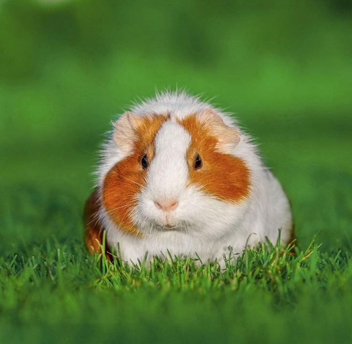

Information:
The Zoo is a free, family-focused zoo which hs a small focus range exotic and domestic animals and is recognised as one of the most progressive zoos in the world.There is lots to see and do all year, including events, eye-to-eye encounters, behind the scenes tours and more!
Zoo experiences motivate children to care for the environment and this is specially important as they will be the caretakes of our precious biodiversity in the future.
The zoo was stared in 1965 by two vey dedicated conservationist, and since that time we have been creating animal exhibit thatnot only emulate the animals' natural habitat but also provide spectator and visito with execellent views of both the outdoors areas and the sleeping quaters.
Hours: We are open 9am to 5pm everyday.
We are open all public holidays including christmas day.
Facilities:Wheelchair and push chair access, playground, sunshade, toilet and picnic tables.
The zoo is a member of the International zoo Educator association